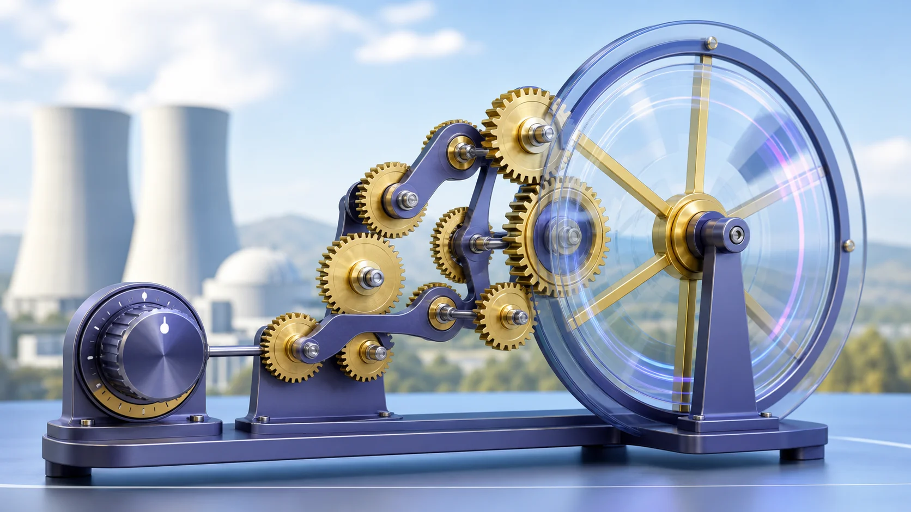
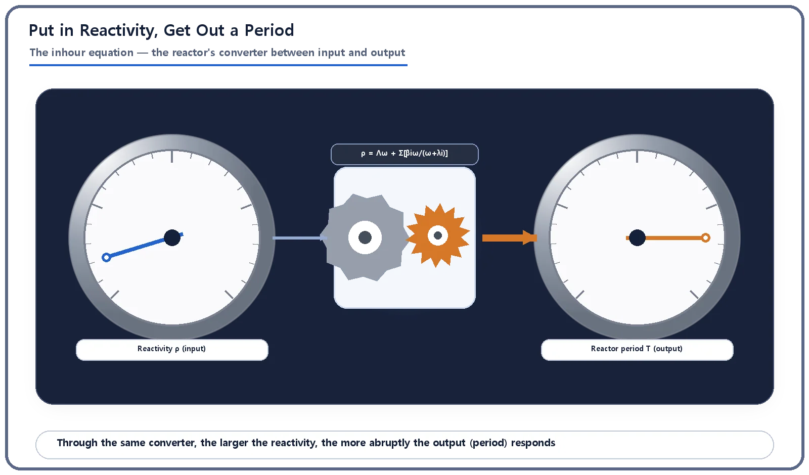
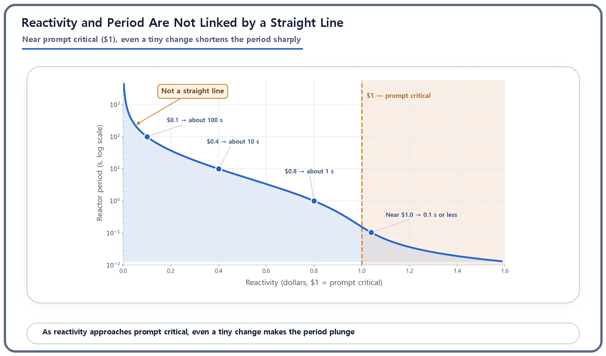

Reactor Kinetics & Reactivity · 107
A Gearbox That Slips Near $1 — How the Inhour Equation Turns Reactivity into a Period
Put in reactivity, get out a period: a converter that is gentle at small reactivity and violently sensitive near $1.

The inhour equation converts reactivity (the input) into the reactor period (the output), and back again. Its standard form, ρ = Λω + Σ βᵢω/(ω + λᵢ) with ω = 1/T, adds the prompt-neutron term and six delayed-neutron groups. The conversion is strongly nonlinear: gentle at small reactivity, but near prompt critical ($1) a tiny change makes the period plunge, which is why reactors are kept well below $1.
What a gearbox and a reactor have in common
If you have ever driven a manual car, you know what gears do. Send engine speed straight to the wheels and you would have no pulling power at low speed and a screaming engine at high speed. So a gearbox sits in between and converts engine speed (the input) into wheel speed (the output): slow wheels in first gear, much faster wheels in fifth for the same engine speed. A gearbox is a conversion table from input to output.
Reactors have an equation that plays a very similar role: the inhour equation. It converts an input called reactivity into an output called the reactor period, a kind of reactor-version gearbox chart. One warning up front: this conversion is not a smooth, fixed ratio like a car's gears. Past a certain point, the slightest touch makes the result jump out of control. That is today's story.
A box that turns reactivity into a period
First, the input and the output. Reactivity (ρ) says how far a reactor is from critical, the balanced state in which neutrons are lost exactly as fast as they are born. The reactor period (T) is the time it takes power to grow e-fold (about 2.718 times). Think of reactivity as "how much margin (or excess) the core has right now," and the period as "how fast power actually changes as a result."
The two are not independent. Once reactivity is set, the matching period is fixed as a single value (assuming the reactor holds that reactivity for a while). The equation linking them is the inhour equation:
ρ = Λω + Σ [ βᵢ · ω / (ω + λᵢ) ] (i is the delayed-neutron group number)
ω (omega) is the inverse of the period (ω = 1/T): how quickly power grows e-fold. Λ (capital lambda) is the neutron generation time. βᵢ and λᵢ are the fraction and decay rate of each group of delayed neutrons, the small share of neutrons that certain fission products release after a delay. There are six such groups, so the exact form adds six terms with the Σ sign. The one thing to remember: put in one value of reactivity, and this equation gives back the one matching period. Strictly, it is derived the other way round (period in, reactivity out), but it reads in either direction, just as you can infer the gear from wheel speed.
Plants use it both ways. Designers calculate how fast power would rise for a given reactivity insertion to confirm the safety margin; during operation, the period observed by the instruments is fed back into the equation to work out how much reactivity is in the core right now.

It's called "inhour," so why do we talk in dollars?
The name is unusual. "Inhour" sounds like it has something to do with time, and it does. It is a historical leftover from the 1940s, when reactor physics was taking its first steps. Researchers then defined a unit of reactivity this way: the reactivity that puts a reactor on a period of exactly one hour (3,600 seconds) is 1 inhour (1 ih). In other words, the reactivity you get by putting ω = 1/3600 into the equation was set as the "1 inhour" mark. The equation takes its name from that unit, the "inverse hour."
Here is the interesting part. Calculating with standard delayed-neutron data and a representative generation time (about 50 microseconds), 1 inhour comes out at roughly 2.35 pcm, or about $0.0036, a tiny amount of reactivity. Even a leisurely one-hour period takes only that minute amount, which shows how sensitive a reactor is to reactivity.
Today, though, almost nobody in the field uses the inhour unit. Dollars and cents, pcm and percent are far more common. The name survives as a historical label; the equation itself works with any reactivity unit.
The gently bending stretch and the sudden plunge
Now the most important part. Within one gear, a car is roughly linear: double the engine speed, double the road speed. The inhour relationship is not. Here are some values calculated with representative thermal-reactor data (standard U-235 delayed-neutron groups, generation time about 50 microseconds). They illustrate the shape of the relationship; they are not design values for any particular plant.
| Reactor period T | Reactivity ρ (dollars, $1 = prompt critical) |
|---|---|
| 1,000 s | about $0.01 |
| 100 s | about $0.10 |
| 30 s | about $0.23 |
| 10 s | about $0.40 |
| 3 s | about $0.62 |
| 1 s | about $0.80 |
| 0.5 s | about $0.89 |
| 0.2 s | about $0.98 |
| 0.1 s | about $1.04 |
| 0.02 s | about $1.38 |
Read the table slowly and two different regions appear.
When reactivity is small (roughly $0.3 or less), the period shortens smoothly as reactivity increases, but not along a straight line. When reactivity rises tenfold, from $0.01 to $0.10, the period drops from 1,000 s to 100 s, one-tenth. But a mere fourfold rise, from $0.10 to $0.40, also cuts the period by a factor of ten, from 100 s to 10 s. "Multiply reactivity by so much and the period shrinks by the same factor" does not hold. The curve looks more like an inverse relationship (a hyperbola). This stretch stays gentle, on a scale of seconds a human can follow, thanks to the delayed-neutron precursors. With half-lives from about a second to tens of seconds, these slowpoke neutrons hold the response down to a manageable pace.
Near prompt critical, $1, the story changes completely. Look again: reactivity creeps from $0.89 to $0.98 to $1.04, yet the period plunges from 0.5 s to 0.2 s to 0.1 s. Why? Once reactivity exceeds $1 (prompt supercritical), the delaying effect of the delayed neutrons can no longer hold the pace back, and control passes to the generation time, which is only microseconds. The delayed-neutron brake starts to let go.
Back in gearbox terms: at low reactivity the gears shift at a fairly predictable ratio, but near $1 it is as if the gearbox suddenly went slack and the lightest touch on the pedal sent engine speed soaring. In a car that would be a fault; in reactor physics it is a normal, well-understood mathematical result of delayed and prompt neutrons swapping roles. That is why reactor design and operation are built to stay well away from this point, keeping reactivity a comfortable distance below $1.

So why does this equation matter?
The inhour equation converts reactivity, a control variable you cannot easily see, into the period, a time you can observe and feel. Designers use it to calculate how fast power would rise for a given reactivity; operators use it to estimate, in real time, how much reactivity is in the core from the observed period.
Its biggest lesson is that this conversion is never a uniform gear ratio. So when handling reactivity, you care not only about how much you have added, but also about how far you still are from prompt critical. The reason is written in the shape of this curve.
Key takeaways
The inhour equation converts between reactivity (ρ) and the reactor period (T, or its inverse ω = 1/T).
The name comes from a 1940s historical unit of reactivity (the reactivity giving a one-hour period); today the equation is mostly used with dollars, pcm and other units.
The conversion is nonlinear: a gentle, roughly inverse curve at small reactivity, and a sharp plunge in period for tiny changes near prompt critical ($1).
Because of this nonlinearity, reactors are designed and operated to keep reactivity well below prompt critical.